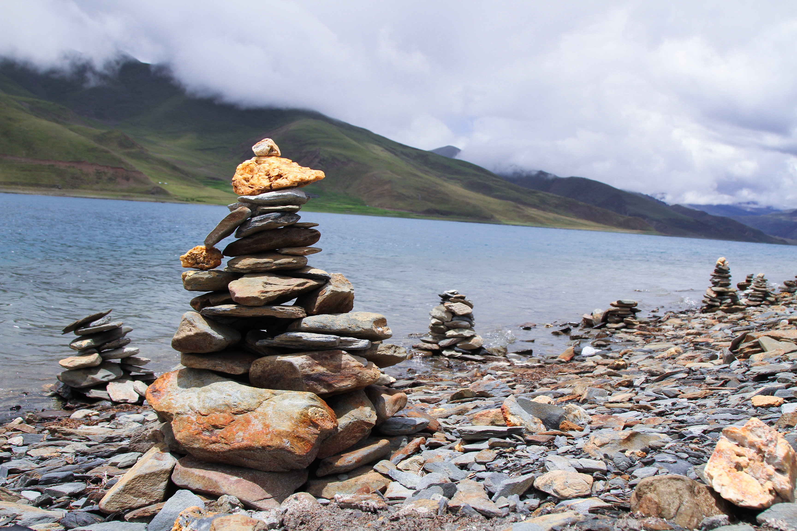

NOW / 当前
回应真实需求
视频、音频、字幕、AI 配音与文档知识整理。以清晰的服务范围和可靠的交付，解决个人与团队正在面对的内容工作。
查看当前服务 ↗NORVA STUDIO · 独立数字创意工作室
以创意回应当下，以探索面向未来。关注技术、艺术、文化与人的表达方式如何变化，并通过真实项目与数字实践作出回应。
了解 NORVA 正在做的事↗
A WAY OF WORKING
我们从真实的问题出发，在创作与技术之间寻找合适的方法。先把当下的事情做好，也为尚未出现的可能留出空间。
THREE DIRECTIONS
NOW / 当前
视频、音频、字幕、AI 配音与文档知识整理。以清晰的服务范围和可靠的交付，解决个人与团队正在面对的内容工作。
查看当前服务 ↗CREATE / 创作
摄影、纪录片与原创短视频 IP。以影像记录人物、地方与时间，让长期观察逐渐形成作品。
进入作品档案 ↗NEXT / 未来
持续研究人工智能、数字视觉、交互体验与创作工作流。新的方向将在实践成熟后逐步展开。
持续研究 · 逐步实践A ROOTED PERSPECTIVE
喜马拉雅的自然经验与文化视野，构成 NORVA 的审美基础。它不被限定为单一主题，而是融入摄影、纪录影像与数字创作的观看方式。
LET'S BEGIN